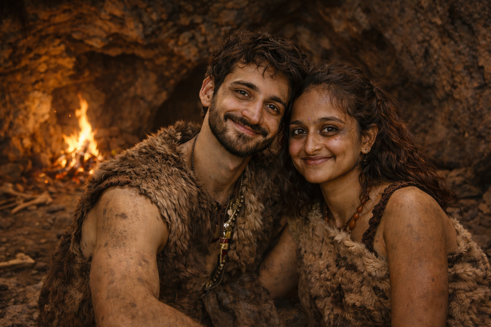
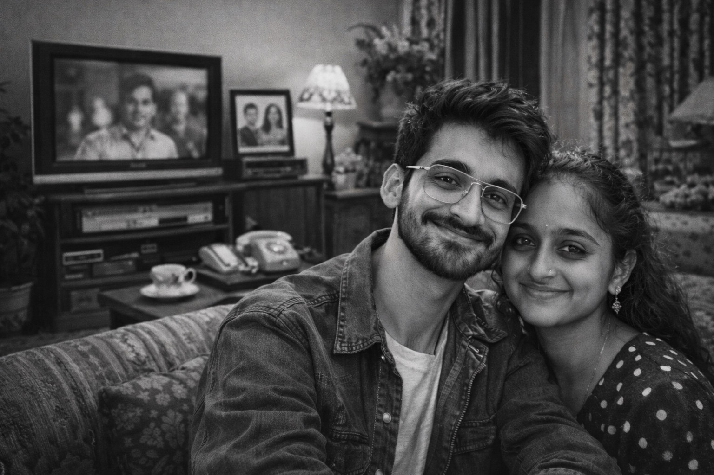

Our Story — Across Every Lifetime 💙

Before history was written
I think I would have found you even when the world was still wild.

In another kingdom
Maybe destiny was already pulling us together.
When the world was changing
Through revolutions and hope — side by side.

If we met in another decade
I know I still would’ve fallen for that smile.
And here we are
Every lifetime somehow led me to you.
Still choosing you — in this lifetime and the next.